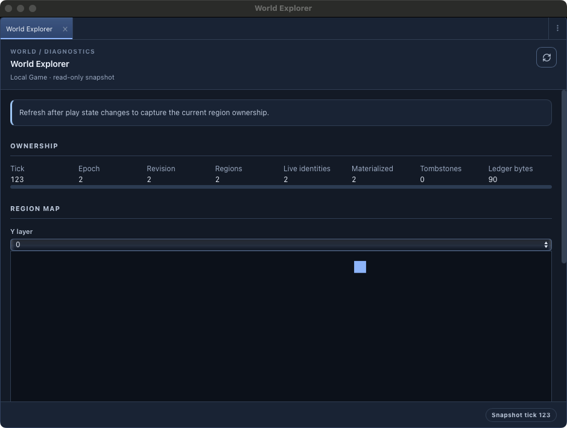
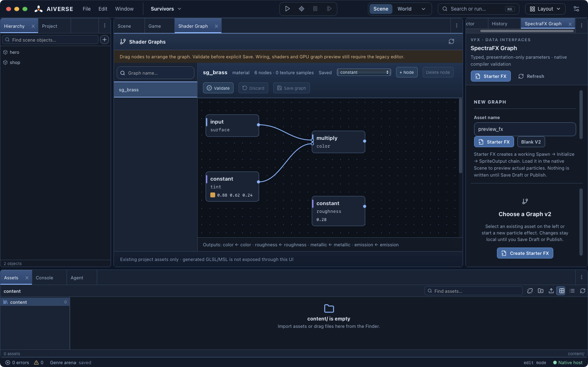
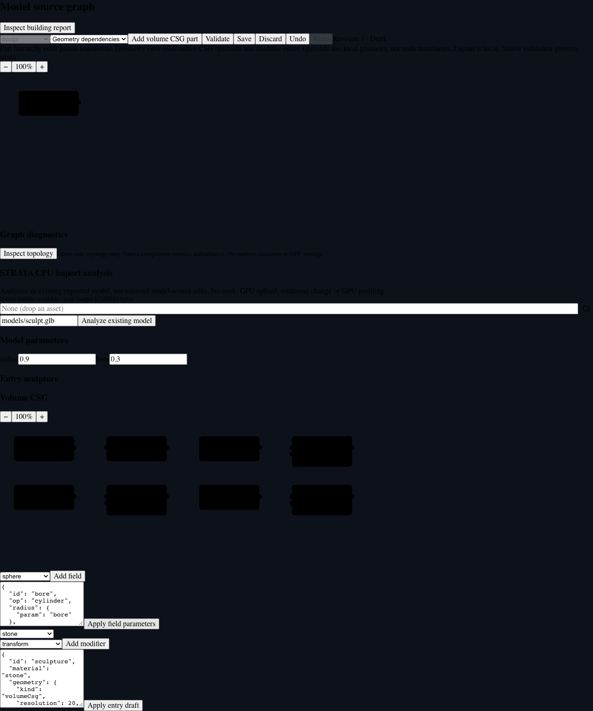

Окна
Сцена, иерархия, инспектор, рельеф, эффекты, свет, интерфейс; свободная стыковка.
Системы движка / Studio — редактор
Редактор, где работают человек и агент
Редактор в стиле Unity со сценой, инспектором и тестовой игрой. Агент правит тот же проект, и каждое его действие можно отменить.
Сцена, иерархия, инспектор, рельеф, эффекты, свет, интерфейс; свободная стыковка.
Запуск матча прямо в редакторе на экранах телефонов и планшетов.
Claude Code работает с открытым проектом, каждая правка — шаг отмены.
Из идеи и папки с артом получается проект с уровнями, обучением и метой.
Редактор сам собирает версию с модулями проекта и перезапускается в неё.
Построение поверхности объекта из примитивов, текстур плотности и шума.
Общее с Mac ядро редактора, интерфейс в WebView2, сцена и игра на Vulkan. Приложение собирается, первый запуск на Windows впереди.
Генерация реальных GLB-моделей через нативный bridge с GUID в Assets; предпросмотр вариантов пока даёт параметры геометрии, 3D-вьюпорт на следующем этапе.
Общие адаптеры и полотно, с сохранением собственных форматов и выполнения каждой системы.
Изолированная игровая сессия, проверка исходной карты и выборочный предварительный просмотр переноса изменений. Добавляются локальные MCP-команды предпросмотра и однократного применения к той же сохранённой карте. При массовом удалении проверить перенос индексов дорог за один проход.
Явное редактирование разрешённых полей ECS при остановленном тике локальной игры с проверкой сессии и исходного значения. Добавляются типизированные локальные MCP-команды с теми же проверками.
Расширение Runtime: точные ссылки, стабильные идентификаторы, принадлежность регионам и навигация по компонентам.
Ограниченный замер реального времени тиков и систем ECS в локальной игре.
Снимок реального игрового ECS: карта регионов по высоте, выбор ячейки и счётчики частоты решений без имитации стриминга. Запуск локального actor-session клиента в Studio и чтение его авторитетного реестра регионов.
Офлайн-диагностика регионов, контрольные точки, резервные копии и подтверждаемая очистка.
S6i: чтение графа, корзины и квот; обратимое удаление по GUID, подтверждённое восстановление, явные границы необратимых операций.
S6h: учёт сохранённых данных и журналов, проектный лимит, защита восстановления и явная очистка без автоудаления.
S6g: точные ссылки в картах и ресурсы glTF, прямые и обратные зависимости, безопасный предварительный просмотр; без автоматической перезаписи неизвестных зависимостей.
Атомарные составные изменения карты, устойчивые метки истории и защита от устаревших переходов.
Из Проводника в Assets и из Assets в сцену.
 25.11.2026GPU-карты Texture Graph на модели сценыВ Studio можно выбрать материал загруженной модели и применить к нему карты из Texture Graph на время сессии.
25.11.2026GPU-карты Texture Graph на модели сценыВ Studio можно выбрать материал загруженной модели и применить к нему карты из Texture Graph на время сессии. 25.11.2026Поиск окон и работа в узких панелях StudioВ меню Window появился поиск по всем панелям. При изменении ширины дока инструменты сцены, поля и списки перестраиваются в пределах своего окна.
25.11.2026Поиск окон и работа в узких панелях StudioВ меню Window появился поиск по всем панелям. При изменении ширины дока инструменты сцены, поля и списки перестраиваются в пределах своего окна.
25.11.2026Регионы и сущности в локальной сессии StudioWorld Explorer показывает, каким регионам принадлежат сущности работающего мира. Паузой и одиночным шагом можно выбрать момент для снимка.
25.11.2026Узлы и связи Shader Graph и SpectraFXВыбор узла подсвечивает его связи. Карточки материала показывают значения констант, а в SpectraFX значения передаются по пунктирным линиям.
25.11.2026Редактируемые объёмные модели в StudioФорма объекта задаётся деревом полей. Измените радиус цилиндра, чтобы расширить отверстие, затем сохраните редактируемый исходник и экспортируйте модель в GLB. 22.11.2026Studio — редактор теперь и для WindowsAIVERSE Studio собирается под Windows: тот же интерфейс, сцена, кисти и Play, что на Mac, работают через WebView2 и Vulkan. Mac и Windows делят одно ядро редактора, поэтому новые возможности появляются сразу на обеих системах.
22.11.2026Studio — редактор теперь и для WindowsAIVERSE Studio собирается под Windows: тот же интерфейс, сцена, кисти и Play, что на Mac, работают через WebView2 и Vulkan. Mac и Windows делят одно ядро редактора, поэтому новые возможности появляются сразу на обеих системах.Другие системы